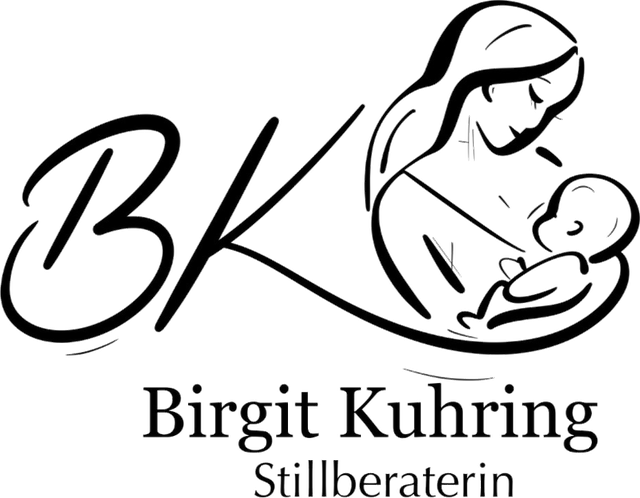

Stillberatung
Unterstützung beim Stillstart, bei Stillproblemen, Milchbildung oder der Stillposition – individuell und praxisnah bei Ihnen zu Hause.
Zertifizierte Stillberatung & Elternbegleitung
Ob Schwangerschaft, Stillstart oder die ersten Monate mit Ihrem Baby – ich unterstütze Sie mit Fachwissen, Ruhe und Herz bei allen Fragen rund um Stillen, Bindung und die frühe Entwicklung Ihres Kindes.

Über mich
Mein Name ist Birgit Kuhring, ich wurde 1974 geboren, bin Mutter von drei Kindern und inzwischen auch stolze Großmutter von zwei Enkelkindern. Durch meine eigenen Erfahrungen in Schwangerschaft, Stillzeit und Erziehung habe ich früh gespürt, wie wertvoll einfühlsame Begleitung in dieser Lebensphase ist.
Ich bin ausgebildete DAIS-Stillbegleiterin, Kleinkindpädagogin und staatlich anerkannte Erzieherin. Mit viel Herz und Fachwissen unterstütze ich Familien rund um die Themen Stillen, Bindung und frühe Kindheit. Mein Anliegen ist es, Mütter und Familien in dieser besonderen Zeit zu stärken – mit Verständnis, Geduld und praktischen Lösungen, die zu Ihnen passen.
Leistungen
Jede Familie ist anders – deshalb passe ich meine Beratung an Ihre individuelle Situation an. Diese Schwerpunkte stehen im Mittelpunkt meiner Arbeit:
Unterstützung beim Stillstart, bei Stillproblemen, Milchbildung oder der Stillposition – individuell und praxisnah bei Ihnen zu Hause.
Beratung zu sicherer Bindung, Nähe und Urvertrauen – für einen liebevollen Start in die Eltern-Kind-Beziehung.
Begleitung durch die ersten Lebensjahre: Entwicklungsschritte, Beikost, Schlaf und die Herausforderungen des Alltags mit Kleinkind.
Beratung in Ihrer vertrauten Umgebung – entspannt, persönlich und ganz ohne Anfahrtsstress für Sie und Ihr Baby.
Informationen und Austausch schon vor der Geburt, damit Sie gut vorbereitet und sicher in die Stillzeit starten können.
Preise
Ablauf
Sie schreiben mir eine Nachricht oder rufen an – ich melde mich zeitnah zurück.
Wir klären gemeinsam Ihr Anliegen und finden die passende Form der Beratung.
Bei Ihnen zu Hause – ganz entspannt in Ihrer gewohnten Umgebung.
Bei Bedarf begleite ich Sie über den ersten Termin hinaus per WhatsApp weiter.
Häufige Fragen
Sie können sich bereits während der Schwangerschaft bei mir melden, um sich auf die Stillzeit vorzubereiten – aber auch jederzeit danach, wenn Fragen oder Herausforderungen auftreten.
Ja, ich komme gerne zu Ihnen nach Hause in Ihre vertraute Umgebung.
Ein Beratungstermin dauert in der Regel 60 Minuten. Bei Bedarf kann er in 15-Minuten-Schritten verlängert werden.
Kontakt
Melden Sie sich gerne unverbindlich – ich freue mich, Sie und Ihre Familie kennenzulernen.